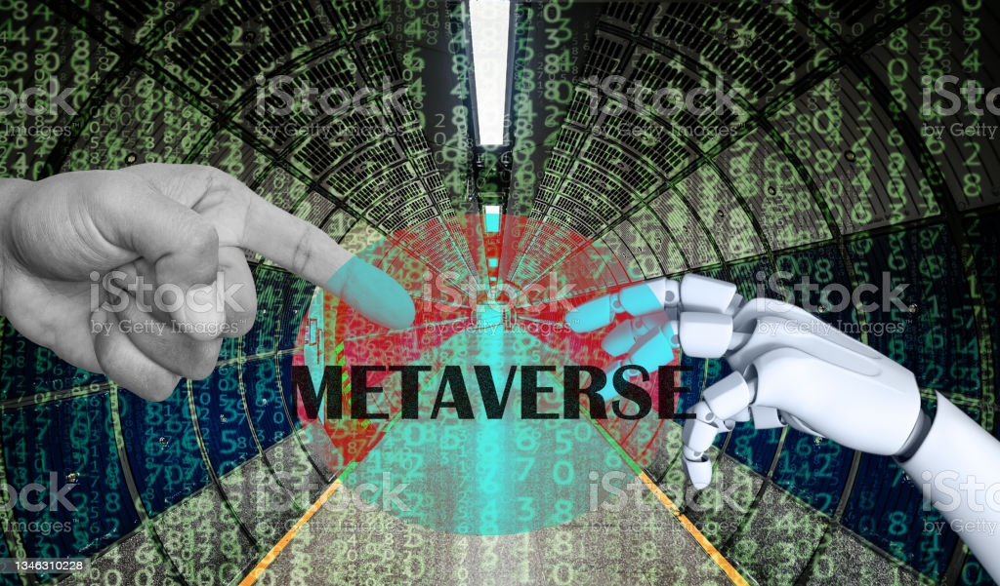

메타버스(metaverse) 또는 확장 가상 세계는 가상, 초월을 의미하는 '메타'(meta)와 세계, 우주를 의미하는 '유니버스'(universe)를 합성한 신조어다. '가상 우주'라고 번역하기도 했다. 이는 3차원에서 실제 생활과 법적으로 인정되는 활동인 직업, 금융, 학습 등이 연결된 가상 세계를 뜻한다.
메타버스라는 개념의 뚜렷한 정의는 아직까지 확립되지 않았다. 일반적으로는 '현실세계와 같은 사회적·경제적 활동이 통용되는 3차원 가상공간' 정도의 의미로 사용되고 있으나,학자나 기관마다 나름의 정의를 내리고 있어 넓은 의미로 통용되고 있다.
